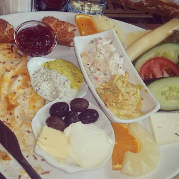
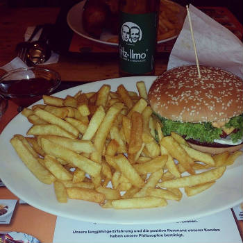
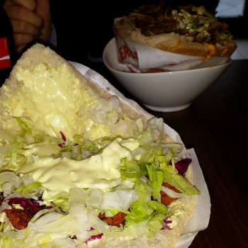
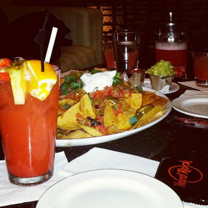
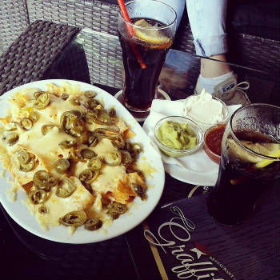
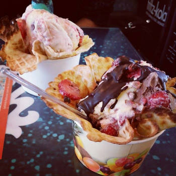
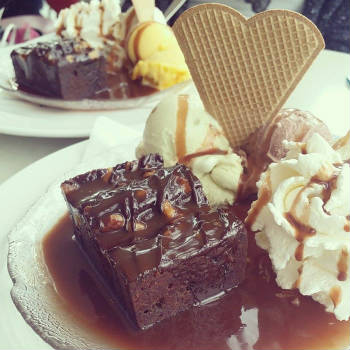

Wer hat morgens auch keine Lust, sich ein Frühstück vorzubereiten? Dann bist du hier genau richtig!
Café Peri ist der beste Ort, wo du dein Hunger am Morgen stillen kannst. Mit ganz vielen
verschiedenen orientalischen und auch berlinerischen Frückstücksroten! Die Preise sind nicht
zu hoch, also ran an den Speck!
Café peri
Potsdamer Str. 203
10783 Berlin - Schöneberg

Gegen 15 Uhr knurrt dein Magen? Du weißt, was zu tun ist! Bei Hühnerhaus kriegst du warmes
Fast-Food ganz günstig und lecker! unter 5 Eur ergatterst du ein Menü mit Pommes, einen Burger
oder ein halbes Hänchen! Das nenn' ich doch mal 'nen Deal! Probiere es aus! Es wird verdammt
lecker schmecken, als du denkst.. Hühnerhaus findest du:
Hühnerhaus
Skalitzer Straße 95A,
10997 Berlin

Du stehst doch eher auf etwas Deftiges? Bei Ye-Mc findest du saftige Döner mit verschiedenen
Soßen und Salatvarianten! Ye-Mc hat einen Namen und ist eine Marke, die jeder kennt! Du
verpasst was, wenn du nicht vorbeischaust! Also, mach!
Ye-Mc GmbH
Streitstraße 57
13587 Berlin

Fast wie jedes Land bzw wie jede Groß-(Haupt)stadt besitzen wir Berliner auch ein Hard-Rock-
Café! Hier findest du tolle warme Gerichte, Zeit für dich selber und Zeit für Familie und
Freunde! Im Hard-Rock-Cafe kannst du auch sauleckere Cocktails schlürfen!
Hard Rock Café
Kurfürstendamm 224
10719 Berlin–Charlottenburg

Dir ist am Abend langweilig und du weißt nicht, was zu tun ist? Dann bewegst du dich Richtung
Kurfürsendamm und dir wird Energie zugeweht! Graffiti ist ein Café und Restaurant gleichzeitig. Die
besten Nachos findest du nur in Graffiti deutschlandweit! Du kannst auswählen zwischen Nachos
mit oder ohne Käse, mit oder ohne Hünchenfleisch und mit oder ohne Jalapenos!
Graffiti
Kurfürstendamm 69
10707 Berlin–Charlottenburg

Das Jungunternehmen hatte einen perfekten Start in die Business-Welt und hat es immer noch! Wonder
Waffel hat in kurze Zeit viele Herzen der Menschen erobert. Drei Schritte gibt es, worauf du
achten musst bei Kauf eienr Wonder Waffel, und zwar:

Du bist Fan von Eis? Schokolade, Vanille ist dir zu Standart?! Dann bist du hier genau richtig!
Hier findest du zig geschmacksvolle Eissorten und das zu nicht teurem Preis! Der Eisladen ist
riesig und hat zwei Stockwerke! Total bekannt und berühmt! Also, bist du es auch, wenn du da
mal vorbeischaust! ;)
Florida
Altstädter Ring 1
13597 Berlin-Spandau